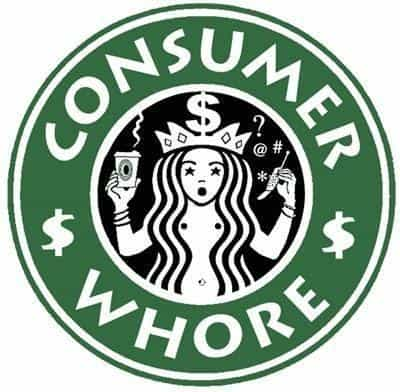
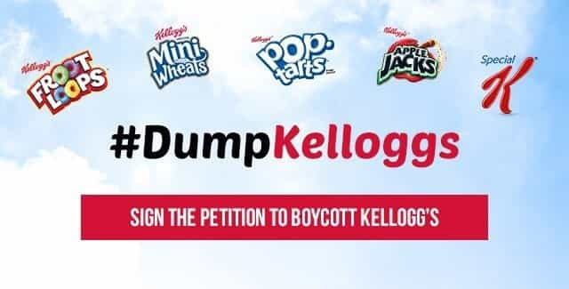
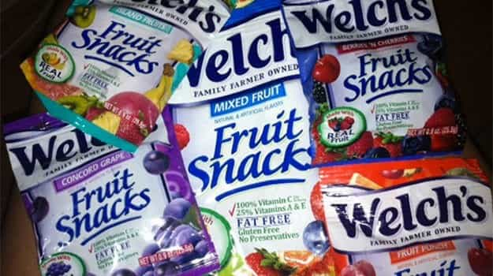
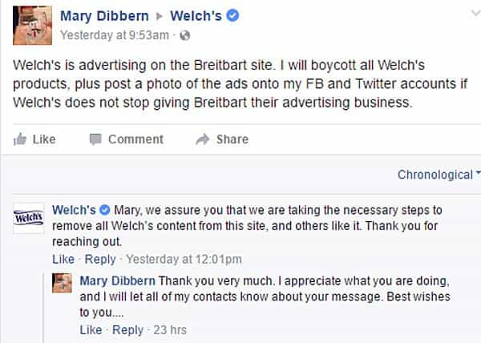
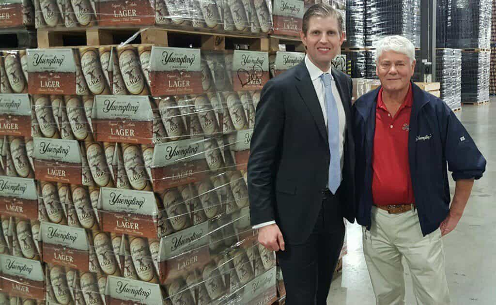
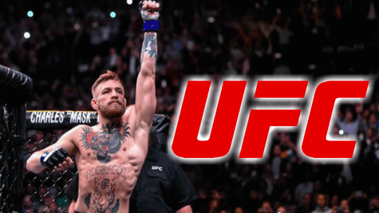

< < < Back
3 Anti-Trump Companies That Men Can Boycott Today – Return Of Kings
Return Of Kings has a massive following—this is our strength. We’re not just a rag-tag team of a few thousand men scattered across the globe…we’re hundreds of thousands strong, with our message growing more and more every single day. Whether the cucks like it or not, we have the power to significantly impact this country.
One of the best ways to significantly impact our country, in my opinion, is to hit the elites where it hurts: right in their pockets. We already cost J.J. Abrams and his overtly multi-cultural propaganda piece Star Wars: The Force Awakens an estimated 4 million dollars, so why not start doing the same for companies that have vehemently spoken out against Trump?
Do not underestimate the power of your pockets, gentlemen. The collective realization that “news” such as CNN and MSNBC is completely fake, and the consequent refusal to watch their programs, is what’s caused them to lose their shit over the past 6 months. We, the men at Return of Kings, as well as our ideological allies all throughout the manosphere, have caused massive changes by simply diverting our attention from elite-owned operations, and giving it to better causes (such as ROK, Breitbart, InfoWars, etc.).
So, with this in mind, here’s my top 3 companies that we can boycott TODAY to show support of the resurgence in American traditionalism:
1. Starbucks (Anti-Trump)

As I have covered before, Starcucks is already a degenerate enough company as it is—they support several transsexual activist groups and lobbied hard for Planned Parenthood, but that’s not even the worst of it.
Recently, after Trump declared that, for the safety of our nation, he was going to ban refugees from several key terrorist-ridden nations, Starbucks responded by saying that they were going to hire 10,000 refugees. If this isn’t the epitome of arrogant and selfish political agendas, I don’t know what is. We have veterans in the streets, our African American population has a nearly 25% unemployment rate, oh, but no… let’s prioritize foreigners, says Starbucks.
By now, you should realize that Starbucks is a globalist whore, and this isn’t going to change any time soon. I’m not asking you to give up coffee—it’s by far one of the best nootropics of all time, and it did, in fact, even fuel the age of enlightenment. Instead of going to Starbucks, just get your coffee from Peet’s, get an organic roast from your local farmer’s market or organic co-op, or make it at home with an Aeropress unit like Roosh does.
It’s time we #BoycottStarbucks and refuse to support their globalist agenda with our hard-earned dollars. And besides, not having to speak with a transsexual, plant-identifying, non-cis-non-binary, purple-hair-dyed barista is enough of a reward as it is.
2. Kellogg’s (Anti-Trump)

On November 29th, 2016, Kellogg’s announced that they would be blacklisting conservative media hub Breitbart, because they don’t believe that their 45,000,000 monthly readers are “in line” with the company’s views. Okay, that’s fine—it’s a free country and they have the right to do that.
But, do you know what, Kellogg’s? We have a right to refuse to support your bullshit cucking out of the United States of America, and millions of Americans are already doing so. Here’s a few of Kellogg’s brands, so you know what to avoid:
- Pop Tarts
- Rice Krispies
- Frosted Flakes
- Apple Jacks
- Raisin Bran
- Fruit Loops
- Kashi
3. Welch’s (Anti-Trump)

Welch’s, the maker of various jams and juices, has followed Kellogg’s suit in banning their ads on Breitbart, because, again, somehow the 45 MILLION monthly readers don’t align with the company’s values (I wonder why). People have already been speaking up, however, because remember—what makes the alt-right strong isn’t necessarily how vocal they are, but rather how willing they are to take decisive action.

Sorry Welch’s, but conservatives fight back (unlike the crybaby left)
And now, here are three companies you should support who have actively promoted the interests and viewpoints of our commander-in-chief:
1. Yuengling (Pro-Trump)

Be right back boys, I’m going to head to my local gas station and get me a six pack—alright, I’m back. Time to get down to business.
Yuengling, which is America’s oldest brewery, was very vocal in their support of Donald Trump. Their CEO, Richard Yuengling Jr., publicly endorsed Donald Trump before he was elected president. In fact, he even gave a tour of the brewery to Donald Trump’s son, Eric:

So, while I usually only recommend drinking alcohol for newbies trying to overcome approach anxiety, seeing that this glorious company supports the return of the greatness of America, I’ll make an exception.
2. UFC (Pro-Trump)

Dana White, a part owner of the UFC, has spoken out, calling Donald Trump a “loyal friend,” and he even spoke out during the Republican National Convention, claiming that “Donald Trump is a fighter and I know he will fight for this country.”
Well, fortunately for our country, he was right. The lib-cucks have tried their best to boycott pro-Trump companies such as UFC, but too bad for them that only about 2% of their audience is made up of liberals, seeing that UFC is one of the most alpha male sports of all time.
3. Hobby Lobby (Pro-Trump)

As if the whole birth control healthcare fiasco of this company wasn’t enough, they’ve also recently decided to place their support with Donald Trump (a wise decision). David Green, who is the CEO of the traditionally conservative company with over 600 stores nation-wide, is extremely Christian and has spoke out against Hillary, claiming that she “…believes that government interests supersede the protection of religious liberty,” which she does.
In addition to this, he has also said that “…Donald Trump has been steadfast in expressing his commitment to uphold the Constitution, and his list of possible Supreme Court nominees inspires confidence that there is hope in my future—and in my grandchildren’s future—for a country that will value those most fundamental rights.”
So if you’d like to get your girlfriend a feminine hobby, such as sewing, painting, knitting, or home-furnishing, Hobby Lobby is now your go-to place.
We’ve reached a stage in the culture wars where we can financially hurt companies and entities which stand opposed to our values. It may be prudent to take advantage of that, and starve the beasts that are trying to harm us and our society, while helping ones that benefit us.
Read More: 5 Companies To Boycott If You Want The West To Survive